Add rotating coordinates to a cell plot
cell_coord_rotate.RdRecords rotation geometry for an animation renderer. This sets a rotation
sequence rather than a single static view. The number of frames, and whether
the animation returns through them, belong to cell_plot_animate(), not this
modifier. Printed ggplot and Plotly views keep the unrotated coordinates.
The default axis is "y", which spins the cell left to right on screen.
Usage
cell_coord_rotate(
object,
axis = "y",
max_degree = 360,
origin = c("origo", "centroid")
)Arguments
- object
A
cell_plotrecipe.- axis
Axis around which coordinates are rotated. Use
"x","y", or"z"for a principal axis, or three finite numeric values for an arbitrary axis. Numeric axes are normalized before they are stored.- max_degree
Maximum rotation angle from -360 to 360 degrees. Positive angles follow the right-hand rule; use a negative angle to reverse direction.
- origin
Rotation origin.
"origo"uses(0, 0, 0)."centroid"calculates the centroid independently within eachcell_grid()panel.
Examples
se <- ReadPNA_Seurat(minimal_pna_pxl_file())
#> ✔ Created a <Seurat> object with 5 cells and 158 targeted surface proteins
se <- LoadCellGraphs(se, cells = colnames(se)[4], verbose = FALSE) |>
ComputeLayout(layout_method = "spectral")
#> ℹ Computing layouts for 1 graphs
cell_graph <- CellGraphs(se)[[4]]
layout_data <- FetchLayoutData(cell_graph, vars = "CD82", layout_method = "spectral_3d") |>
# Downsample to speed up tests
dplyr::slice_sample(n = 5000)
cell_plot(layout_data) |>
cell_coord_rotate(axis = "y")
